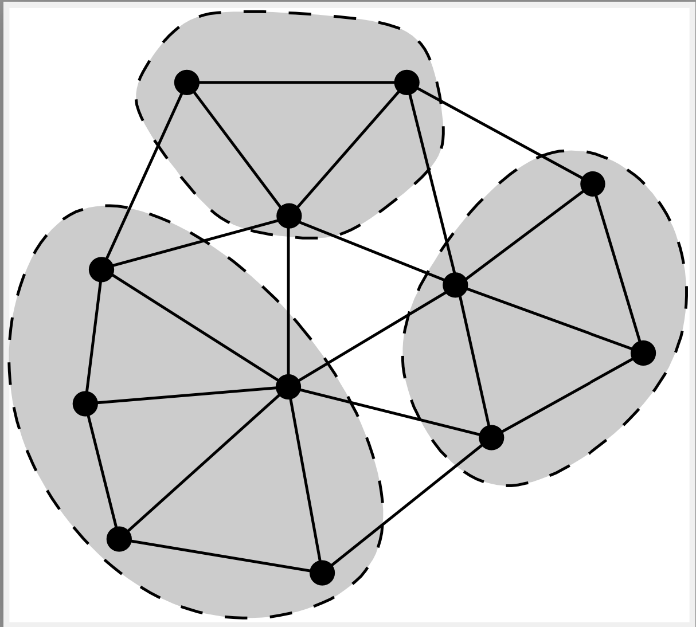

82. Algebraic Multigrid Methods#
Algebraic multigrid methods (AMG) build a multigrid hierarchy from the given matrix. In contrast to geometric multigrid methods, they do not need a mesh hierarchy. Just one finite element mesh is enough. This makes them useful for a wide range of of applications.
AMG takes profit from providing the type of problem (Poisson equation, elasticity, Maxwell, …).
NGSolve comes with builtin AMG solvers for scalar equations, and for Maxwell equations. It provides also interfaces to external, parallel AMG solvers (hypre, gamg, …)
82.1. Agglomeration based scalar AMG#
The coarsening of degrees of freedom is steered by the strength of connections between dofs, one may think of a network of resistors. For this, one finds edge-based weights \(w_E\) such that the energy norm is equivalent to the weighted sum of squared differences:
where \(w_E\) is the edge-weight (i.e. the conductivity of each resistor), and \(E_1\) and \(E_2\) are the vertex numbers of the end-points of the edge \(E\). The right hand side is a norm represented by a surrogate matrix \(\tilde A\).
Coarse grid vertices are defined by the index mapping
All vertices having the same index are combined to a cluster. Each cluster is a degree of freedom on the coarse grid.
{kind=link}

How to select the agglomerates ? The basic principle is to combine vertices to clusters which are connected by a strong conductivity. For each edge we compute the coarsening weight
which is the ratio of the edge-weight, to the geometric mean of the sum of all edge-weights connected to vertices i, and j. One sorts the edges by the coarsening weights, and selects all edges for collapsing whose vertices don’t belong to edges selected before.
82.2. The builtin h1amg preconditioner#
The h1amg preconditioner works for symmetric, scalar problems with nodal degrees of freedom. It uses unsmoothed agglomeration for the generation of coarse spaces.
The first task is to determine the edge-weights. If one has access to element-matrices (instead of the assembled matrix), one has better possibilities. One may compute Schur complements with respect to all edges of each element, which gives a surrogate matrix for each element. Then sum up the weights (conductivities) of all elements sharing the edge.
To have access to element matrices, the setup of the surrogate matrix is included into the assembling loop. Thus, the workflow is to
define the biliear-form
define the h1amg preconditioner, which registers at the bilinear-form
finally assemble the bilinear-form, which also runs the setup of the preconditioner
from ngsolve import *
from ngsolve.la import EigenValues_Preconditioner
# minimize memory requirements by switching off tables which we don't need here
import netgen.meshing
netgen.meshing.Mesh.EnableTableClass("edges", False)
netgen.meshing.Mesh.EnableTableClass("faces", False)
with TaskManager():
mesh = Mesh(unit_cube.GenerateMesh(maxh=0.1))
for l in range(3): mesh.Refine()
# fes = H1(mesh, order=1, order_policy=ORDER_POLICY.CONSTANT) # todo: fix withtout edge/face tables
fes = FESpace("nodal", mesh, order=1)
print ("ndof=", fes.ndof)
u,v = fes.TnT()
a = BilinearForm(grad(u)*grad(v)*dx + 1e-3*u*v*dx)
pre = Preconditioner(a, "h1amg")
with TaskManager():
a.Assemble();
lam = EigenValues_Preconditioner(a.mat, pre.mat)
print (list(lam[0:3]), '...', list(lam[-3:-1]))
ndof= 442577
[0.18097681147983669, 0.1985719871451886, 0.2409415318890591] ... [0.9647403109251911, 0.9926806770947283]
Exercises:
test the
h1amgpreconditioner with more complicated domains, varying coefficients across sub-domains, and additional \(L_2(\Omega)\) and \(L_2(\Gamma)\)-termsuse the
h1amgpreconditioner as coarse grid preconditioner of a (low-order/high-order) multigrid preconditioner, or BDDC preconditioner